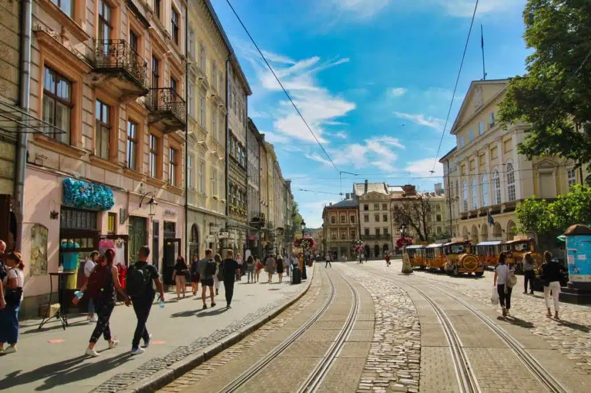

About me
I was born and raised in Lviv, Ukraine. Since I moved to the USA I have been living in Maryland, Rockville. I had changed a few jobs already, I went from food runner to barista to waitress.

Additionally
Currently I am working part-time in a fine dinning restaurant. Even though I started only three weeks ago I really like my new job.
I have a trip to Miami already planned with my friend and I am really excited about it! What is even more important it will be my first vacation I earned and planned myself.